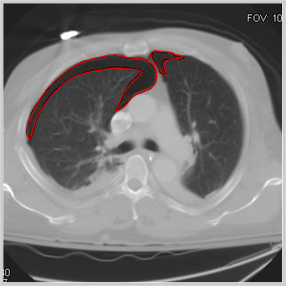
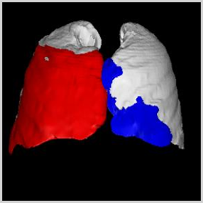
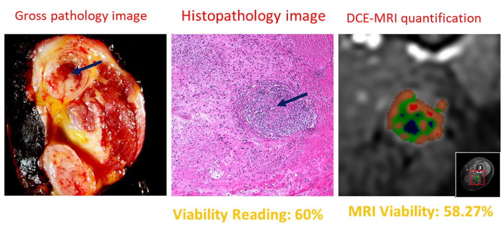

MDCT for automated detection and measurement of pneumothoraces in trauma patients
We developed an automated computerized scheme for detection and quantification of pneumothoraces for trauma patients imaged with MDCT.


Viable Quantification of Sarcoma
We developed a pre-surgical MRI quantification method to calculate the viability of sarcoma.

Evaluate the reliability of radiology score compared with the viability reeding score of pathology after resection: correlation of r = 0.783 (p < 0.0012)